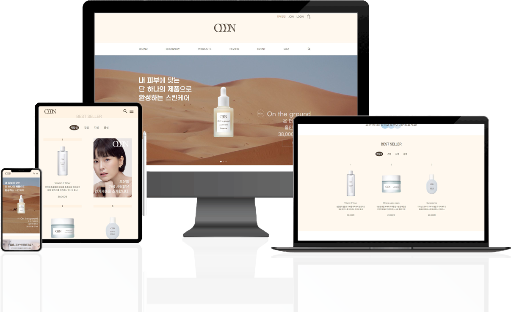

PROJECT CONTENTS
기획 반응형 웹 디자인
Category : 유통/판매Period : 2022.11.01~2023.01.31
Project Worker : 최수영 100%
(기획,디자인,퍼블리싱)
Tool : Adobe XD, Photoshop, Illustrator
HTML5, CSS3, JavaScript

소비자는 많아진 선택지에 개개인에게 맞는 현명한 소비를 위해
화장품 성분 분석 어플등을 이용하고는 합니다.
오운은 피부진단을 통한 처방으로 개개인의 니즈를 타겟팅하고,
친환경 및 동물실험을 진행하지 않는 천연성분 위주의 제품을 지향합니다.
따라서 오운은 소비자들의 건강하고 행복한 소비를 위해 기획되었습니다.
피부고민에 맞는 제품
· · · 57.8%
화장품 성분
· · · 44.4%
발림성 · 흡수력 등 사용감
· · · 42.5%
세일 · 프로모션
· · · 41%
출처 : 코스모닝
" 개인의 니즈에 맞는 피부 고민별 스킨케어 제품이 필요한 지금 "
올리브영, 화해 등의 인기 채널을 통해
스킨케어 제품 구입 전, 고려사항 및 고민사항을 수집하여 2가지 페르소나를 제작했습니다.
지성피부지만 날씨가 건조해지면 피부가 찢어질 듯 아파요.
그렇다고 남들이 좋다는 보습력이 높은 제품을 쓰기에는
유분이 과해져서 매번 트러블이 올라와요.
저처럼 수분부족 지성에게도 찰떡인 제품을 찾고 싶어요.
#입소문템 피해자
27세 개발자
이지혜
#지속가능성 추구
24세 패션디자이너
강해린
회사에서 비건패션 제품에 대해 이런 저런 조사를 하다보니,
덩달아 비건뷰티에도 관심도가 높아졌어요.
비건, 친환경 제품 연구에 진심인 브랜드를 찾고 싶어요.
이왕 소비하는 거 착한소비면 더 좋지 않을까요?
20 · 30대 여성은 뷰티 스킨케어 제품을 가장 활발히 사용하고,
최근들어 우수한 제품력을 가진 동시에 소비자 니즈를 빠르게 캐치하는
'라이징 뷰티 브랜드' 를 선호하는 것으로 나타났습니다.
체계적으로 피부타입을 진단하는
개개인의 올바른 스킨케어를 위한
끊임없는 연구로 더 건강한 제품
1. 지속적인 연구개발로 보다 정확한 피부진단 결과
2. 내 피부에 맞는 최소한의 스킨케어 제품 제안
3. 지구가 행복한 클린뷰티 제품
홈페이지의 주요 기능인 '피부진단'에 대한 이용자의 접근성을 높이기 위해
메인화면에 진단버튼 및 소개 페이지를 배치한 직관적인 인터페이스를 구축했습니다.
또한 브랜드 고유 이미지가 느껴질 수 있도록 일관성있는 무드로 디자인했습니다.
오운은 토양, 하늘, 바다 등 자연을 모티브로 활용했습니다.
순하고 무해한 성분의 느낌이 드러나는 메인컬러의 아이보리와 더불어
전체적인 자연친화적 색상 사용으로 시각적 피로도를 낮추고,
무해하고 깨끗한 느낌이 연상되도록 제작하였습니다.
OOON은 비슷한 소리의 own의 자기 자신의 것이라는 의미를 차용하였고,
로고의 이미를 더하여 “ 나 자신의 고유한 가치를 이해하고,
가장 기초적인 나만의 아름다움을 풀어나가자 ”
라는 의미를 담아 제작했습니다.